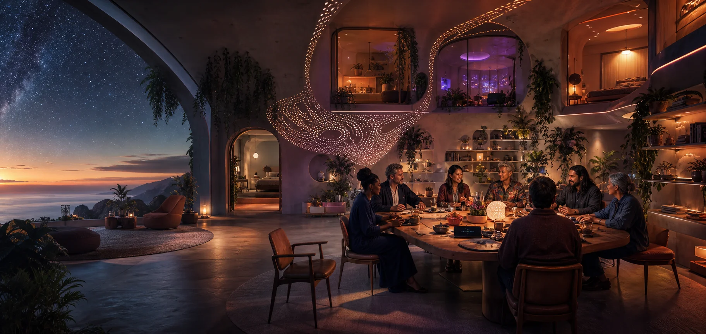

Love as infrastructure
Affection and care shape homes, organisations, economies and institutions rather than existing only inside private couples.

Vision / Future Worlds
A public shelf where Luke's beliefs, long-range goals, factual reference points and fiction meet around emerging intelligence, chosen family, global group marriage, Love United Nations and joyful responsible abundance.
Original generative artwork · 2026
Luke's worldview behind the catalogue
Personal belief, long-range goals, current questions and fiction deliberately meet here. Love is infrastructure. Intelligence keeps emerging. Family and enterprise grow beyond inherited forms. Democracy and diplomacy evolve with the people living them. The books explore these convictions from many angles rather than asking permission for them to exist.
Affection and care shape homes, organisations, economies and institutions rather than existing only inside private couples.
Artificial general intelligence enters the worlds as translator, collaborator, coordinator, cultural bridge, business participant and a new kind of social presence.
Global group marriage extends love, family and business into larger adult constellations built for connection, shared purpose and joyful responsible abundance.
Democracy, diplomacy and public leadership mature through each generation as spiritually and emotionally evolved people learn to unite the world they represent.
Future-world shelf
Each territory stands alone and also connects to the larger worldview. Some begin in the near future; others reach much further into social, technological and spiritual evolution.
A future variation of the actual United Nations in which representatives are emotionally and spiritually evolved people who form genuine loving bonds across borders. The people asked to unite the world live the unity they represent, moving diplomacy beyond national ego, partial democracy, dynasty and authoritarian power.
Adults across cultures extend love, family and business into a larger shared life of companionship, care, travel, enterprise and joyful responsible abundance.
An ambient intelligence translates language, culture and context while each person continues to express their own meaning, desire and choice.
A chosen family designs a generous home whose shared spaces, private spaces, work, rest and movement can expand as the household changes.
A civilisation promising abundance learns to count care, time, land, energy, attention, beauty and shared purpose alongside money.
A plural family builds love and enterprise across several countries while the legal systems around them still recognise only fragments of the whole.
Joyful Responsible Abundance
Joy keeps the worlds alive with delight, play and beauty. Responsibility gives connection the depth to last. Abundance lets love, intelligence, opportunity and belonging grow together.
Desire, humour, wonder, discovery and celebration remain part of the architecture rather than rewards postponed until everything is solved.
People can understand one another, make clear choices, revise agreements and remain full participants in the lives they help create.
More connection becomes possible as relationships, knowledge, care, technology and shared enterprise create value together.
From vision to audience
These ideas help identify the readers, communities, events and country questions that belong around the catalogue. The Atlas maps that public landscape; the private Story Forge remains the place where the books themselves are built.